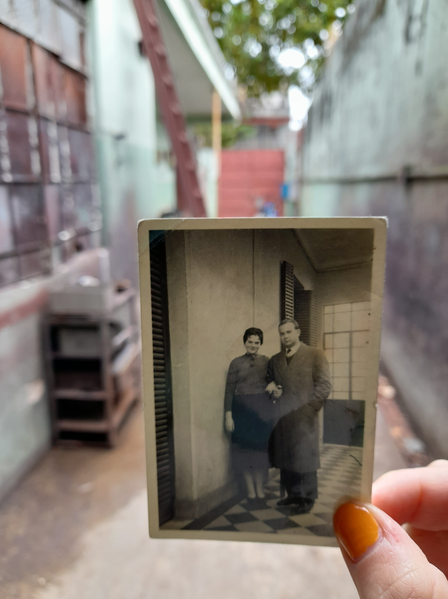
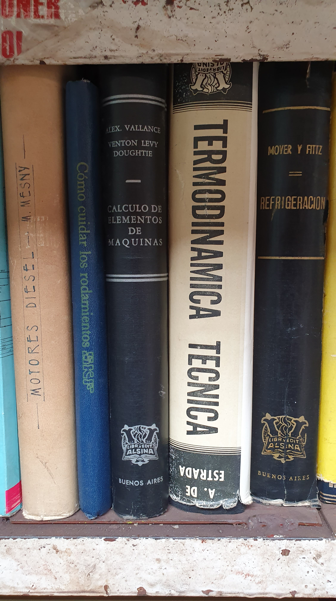

Los cuatro hermanos Lubocki, José, Abremke, Folke y Morduch instalan, a mediados de los ’40, un taller de cierres de carteras niquelados en el barrio de Villa del Parque. Durante largos años la familia trabaja, progresa, y también vive y se agranda, en ese mismo lugar. En los ’60 la fábrica se reformula cuando uno de los hijos de Morduch, Mauricio, concluye sus estudios en ingeniería mecánica.
Así nace EMMA (Empresa Metalurgica Mercantil Argentina) para, años más tarde, renombrase como Termomecánica Adiabatic. En este nuevo formato, concentra su producción a torres de enfriamiento de agua e intercambiadores de temperatura. Hacia finales de la misma década fallece, joven y en pleno vuelo profesional, Mauricio. La Termomecánica Adiabatic queda a cargo de su esposa, Feigue.
Quien toma las riendas y, con naturalidad, administra la fábrica hasta finales del año 2019. El fallecimiento de un operario por enfermedad, la pandemia que se extiende, y la salud de la dueña, que empieza a quebrarse, hacen imposible continuar con la actividad. Hacia finales del año 2021, los descendientes ponen en marcha el desarme. Décadas de historias se sienten en el aire.
Se plasman en retazos, en hierro oxidado, en aceite industrial, en toneladas de papeles y fotos. La transformación es inminente. La diyuntiva: mutar o vender. Se sueña mutar, y se elige. La rueda gira, cíclica. Nueva energía, nuevas ganas. Se acercan amigos y amigas. El espacio parece conquistar a quien lo visita. Se trabaja el terreno, duro pero con disfrute, para sembrar de nuevo. Inicios del 2022. Se empiezan a ver brotes.
